1 pamoka. Pirmoji programa su Python
Šioje pamokoje parašysi ir paleisi savo pirmąsias Python programas. Viską gali atlikti savarankiškai: skaityk iš eilės, kiekvieną pavyzdį surink pats ir paleisk.
Ko išmoksi
- atidaryti Thonny, sukurti, įrašyti ir paleisti programą;
- išvesti tekstą ir skaičius komanda
print(); - atlikti aritmetinius veiksmus Python kalba;
- sukurti kintamąjį, priskirti jam reikšmę ir ją panaudoti;
- perskaityti klaidos pranešimą ir pataisyti dažniausias klaidas.
Kodo nekopijuok – surink jį klaviatūra pats. Rinkdamas įsimeni rašybą ir greičiau pastebi klaidas.
1. Nuo blokinės schemos prie programos
Programa yra tas pats algoritmas, tik užrašytas kompiuteriui suprantama kalba. Iki šiol algoritmus vaizdavai blokinėmis schemomis. Dabar tuos pačius žingsnius rašysi tekstu – Python kalbos komandomis.
Python yra programavimo kalba. Ji turi aiškias rašybos taisykles, tačiau jos komandos primena paprastus angliškus žodžius, todėl ją patogu mokytis pirmąją.
Thonny yra programa, kurioje rašysi ir paleisi Python kodą. Tai pradedantiesiems sukurta programavimo aplinka: joje yra vieta kodui rašyti ir vieta rezultatui matyti.
Blokinės schemos ženklai turi atitikmenis Python kalboje:
| Blokinėje schemoje | Python kalboje | Kada mokysimės |
|---|---|---|
| Pradžia ir pabaiga (ovalas) | Atskiros komandos nėra: programa prasideda pirmąja eilute ir baigiasi paskutine | Šią pamoką |
| Duomenų išvedimas (lygiagretainis) | print() | Šią pamoką |
| Veiksmas, priskyrimas (stačiakampis) | = ir aritmetiniai veiksmai | Šią pamoką |
| Duomenų įvedimas (lygiagretainis) | input() | Kitą pamoką |
| Sąlyga (rombas) | if | Vėliau |
Kompiuteris komandas vykdo taip pat, kaip tu skaitai schemą: po vieną, iš viršaus į apačią.
2. Thonny paruošimas
Mokyklos kompiuteryje Thonny jau įdiegta – susirask ją tarp programų ir atidaryk. Namuose ją nemokamai atsisiųsi iš svetainės thonny.org: puslapio viršuje pasirink savo operacinę sistemą (Windows, Mac arba Linux) ir įdiek kaip įprastą programą. Python įdiegiamas kartu, atskirai jo siųstis nereikia.
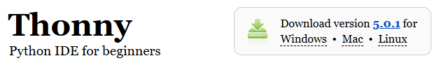
Pirmą kartą paleidus Thonny, ji paklausia kalbos – pasirink lietuvių. Jei tavo Thonny meniu angliškas, kalbą pakeisi taip: , pasirink lietuvių kalbą ir paleisk Thonny iš naujo. Toliau šioje pamokoje visi meniu pavadinimai lietuviški.
Thonny langas
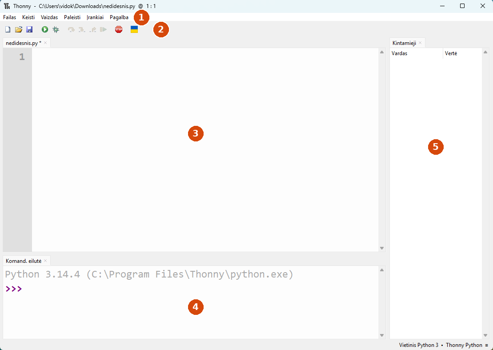
| Nr. | Lango dalis | Kam skirta |
|---|---|---|
| 1 | Meniu | , , , , , |
| 2 | Įrankių juosta | Dažniausiai naudojami mygtukai |
| 3 | Redaktorius | Čia rašai programą. Ji įrašoma į failą ir gali būti paleista daug kartų |
| 4 | Komandų eilutė (kortelė ) | Čia matai programos rezultatą ir klaidų pranešimus. Prie ženklo >>> gali išbandyti vieną komandą iš karto |
| 5 | Langelis | Čia matysi savo programos kintamuosius ir jų reikšmes |
Svarbiausi mygtukai
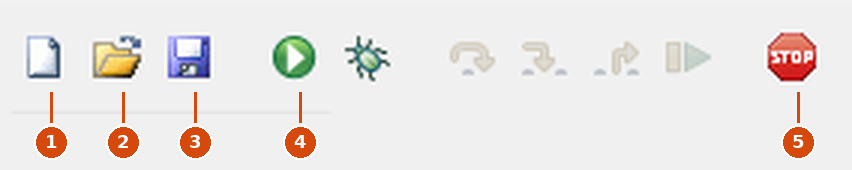
| Nr. | Mygtukas | Ką daro | Klavišai |
|---|---|---|---|
| 1 | Baltas lapas | Sukuria naują failą | Ctrl+N |
| 2 | Aplankas | Atveria anksčiau įrašytą failą | Ctrl+O |
| 3 | Diskelis | Įrašo failą | Ctrl+S |
| 4 | Žalias apskritimas su trikampiu | Paleidžia programą | F5 |
| 5 | Raudonas ženklas STOP | Sustabdo programą | Ctrl+F2 |
Pasiruošk darbo vietą
- Kompiuteryje sukurk aplanką
python. Jame laikysi visas savo programas. Šios pamokos nuotraukose aplankas yra diske C: (C:\python); mokyklos kompiuteryje jį kurk ten, kur nurodė mokytojas. - Jei dešinėje nematai langelio , meniu pasirink .
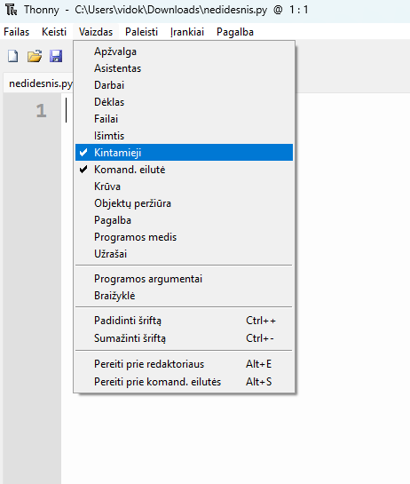
Failų pavadinimų taisyklės:
- pavadinimas baigiasi
.py, pavyzdžiui,labas.py; - rašyk mažosiomis raidėmis, be tarpų ir be lietuviškų raidžių:
pirma_programa.py, o nePirma programa.py; - failo nevadink
python.py,print.pyarturtle.py– tokie vardai trukdo Python darbui.
3. Pirmoji programa
Komanda print() išveda į ekraną tai, ką parašai skliaustuose. Tai blokinės schemos išvedimo blokas.
Parašyk ir paleisk
- Thonny redaktoriuje (viršutinėje dalyje) surink:
print("Labas, pasauli!") - Paspausk Ctrl+S (arba ). Atsidarys langas . Atverk savo aplanką
python, laukelyje įrašyklabas.pyir spausk .
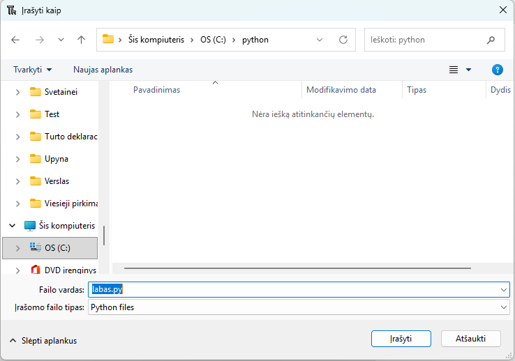
python, failo vardas labas.py.- Paspausk F5 arba žalią mygtuką (meniu – ).
- Pažiūrėk į komandų eilutę apačioje. Turi matyti
Labas, pasauli!
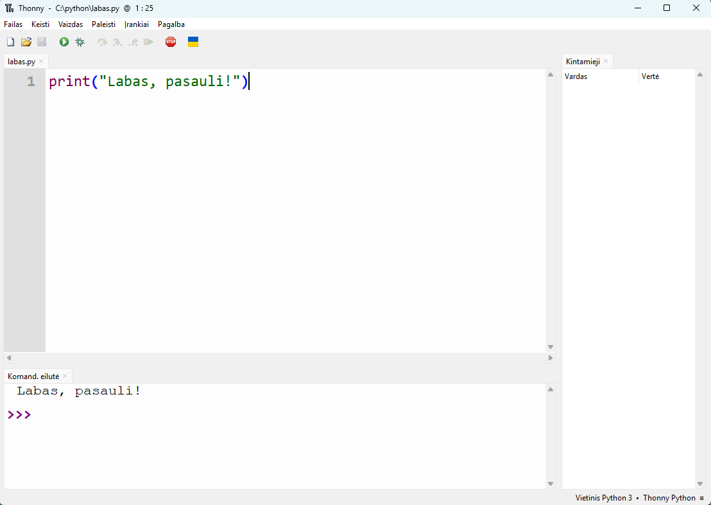
Sveikinu – tai tavo pirmoji programa.
Kaip sudaryta komanda
print("Labas, pasauli!")| Dalis | Ką reiškia |
|---|---|
print | Komandos vardas. Rašomas tik mažosiomis raidėmis |
( ) | Skliaustuose nurodai, ką išvesti. Atidaręs skliaustą, būtinai jį uždaryk |
" " | Kabutės žymi tekstą. Tarp jų gali rašyti bet ką, ir lietuviškas raides |
Kabutės turi būti tiesios, surinktos klaviatūra: ". Lietuviškos kabutės „ “, nukopijuotos iš teksto redaktoriaus, netinka.
Kelios eilutės
Kiekviena print() komanda išveda naują eilutę. Papildyk programą ir vėl paleisk:
print("Labas, pasauli!")
print("Mokausi programuoti.")
print("Tai mano pirmoji programa.")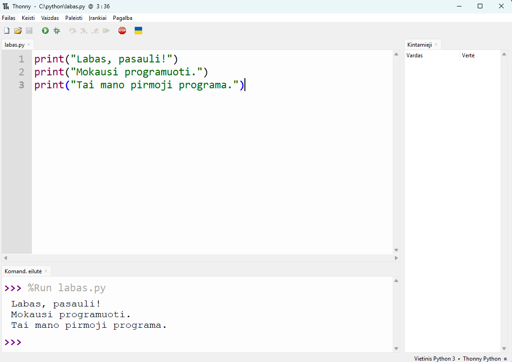
%Run labas.py reiškia, kad Thonny paleido tavo failą.Kiekvieną komandą rašyk naujoje eilutėje ir pradėk nuo pat eilutės pradžios. Tarpai eilutės pradžioje Python kalboje turi reikšmę, todėl kol kas jų nedėk.
Pakeisk programą taip, kad ji išvestų tavo vardą, klasę ir mėgstamą dalyką – kiekvieną atskiroje eilutėje.
4. Python kaip skaičiuotuvas
Python moka skaičiuoti: skaičius rašai be kabučių, o veiksmus žymi ženklais. Išbandyk komandų eilutėje – spustelėk prie >>>, surink veiksmą ir paspausk Enter.
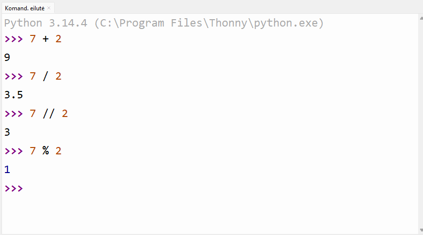
| Veiksmas | Ženklas | Pavyzdys | Rezultatas |
|---|---|---|---|
| Sudėtis | + | 7 + 2 | 9 |
| Atimtis | - | 7 - 2 | 5 |
| Daugyba | * | 7 * 2 | 14 |
| Dalyba | / | 7 / 2 | 3.5 |
| Dalyba be liekanos (sveikoji dalis) | // | 7 // 2 | 3 |
| Dalybos liekana | % | 7 % 2 | 1 |
| Kėlimas laipsniu | ** | 7 ** 2 | 49 |
Keturi dalykai, kurie skiriasi nuo matematikos pamokos:
- Dešimtainė trupmena rašoma su tašku:
3.5, o ne3,5. - Daugybos ženklas būtinas: rašyk
2 * 5, o ne2 x 5ar2 · 5. - Dalybos
/rezultatas visada su tašku:8 / 2duoda4.0, o ne4. - Veiksmų tvarka tokia pati kaip matematikoje: pirma laipsnis, tada daugyba ir dalyba, tada sudėtis ir atimtis. Tvarką keičia skliaustai:
2 + 3 * 4yra 14, o(2 + 3) * 4yra 20.
Skaičiai programoje
Komandų eilutė atsakymą parodo iš karto, bet programoje (redaktoriuje) rezultatą reikia išvesti komanda print(). Sukurk naują failą (Ctrl+N), įrašyk jį vardu skaiciuotuvas.py ir surink:
print(7 + 2)
print("7 + 2")
print("7 + 2 =", 7 + 2)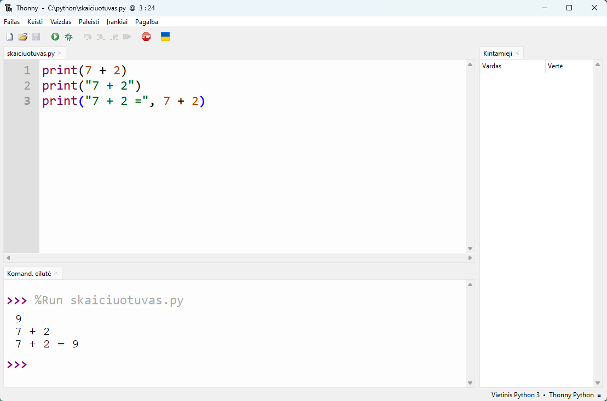
skaiciuotuvas.py ir jos rezultatas.Palygink pirmąsias dvi eilutes. Be kabučių Python apskaičiuoja reiškinį. Kabutėse esantį tekstą išveda tiksliai tokį, koks parašytas.
Trečioje eilutėje print() išveda du dalykus, atskirtus kableliu: tekstą ir apskaičiuotą skaičių. Tarp jų Python pats įterpia tarpą.
Apskaičiuok ir išvesk, kiek sekundžių yra vienoje paroje. Teisingas atsakymas – 86400.
5. Kintamieji
Kintamasis yra vardas, kuriuo programa įsimena reikšmę. Įsivaizduok dėžutę su užrašu: užrašas yra kintamojo vardas, o dėžutės turinys – jo reikšmė. Blokinėse schemose kintamuosius jau naudojai, pavyzdžiui, a, b, suma.
Reikšmė kintamajam priskiriama ženklu =. Sukurk failą kintamieji.py:
vardas = "Rasa"
amzius = 15
print("Mano vardas", vardas)
print("Man", amzius, "metų")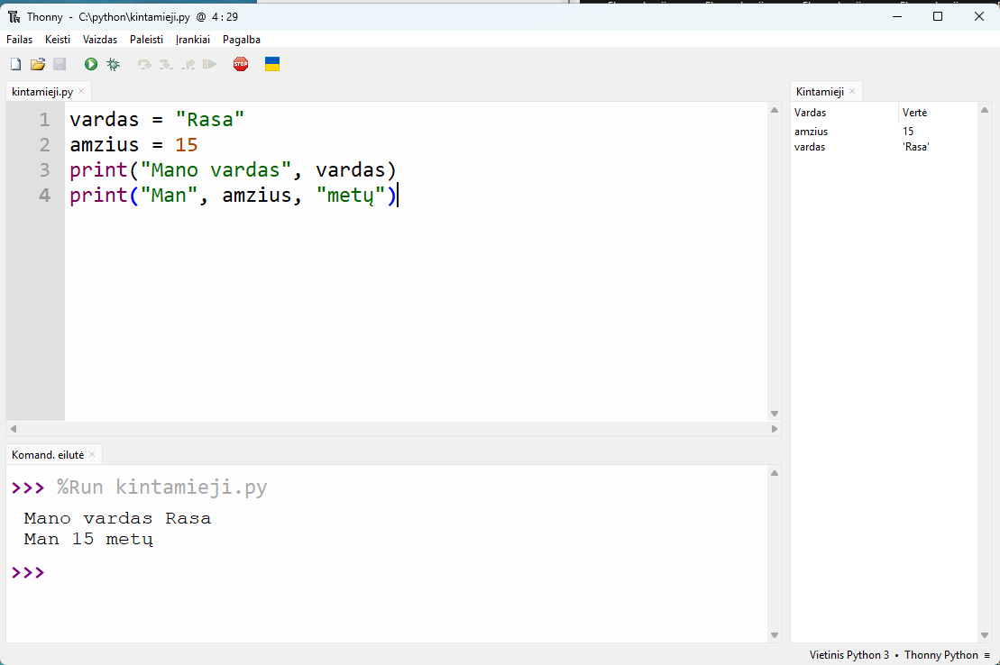
Atkreipk dėmesį į kabutes. "vardas" kabutėse yra tiesiog tekstas, o vardas be kabučių – kintamasis, vietoj kurio Python įstato jo reikšmę.
Ženklas = reiškia „priskirti“
Python kalboje = nėra lygybė kaip matematikoje. Tai nurodymas: apskaičiuok tai, kas dešinėje, ir įsimink kintamajame, kuris kairėje. Tai tas pats priskyrimo veiksmas, kurį blokinėje schemoje rašei stačiakampyje.
ilgis = 8
plotis = 5
plotas = ilgis * plotis
print("Stačiakampio plotas:", plotas)Stačiakampio plotas: 40Kintamojo reikšmę galima pakeisti. Nauja reikšmė pakeičia senąją:
taskai = 10
print(taskai)
taskai = taskai + 5
print(taskai)10
15Eilutė taskai = taskai + 5 matematikoje neturi prasmės, bet programoje ji reiškia: paimk dabartinę taskai reikšmę (10), pridėk 5 ir rezultatą (15) vėl įsimink kintamajame taskai.
Kintamųjų vardų taisyklės
| Taisyklė | Tinka | Netinka |
|---|---|---|
| Vardas be tarpų; žodžius jungia pabraukimo brūkšnys | mano_vardas | mano vardas |
| Vardas neprasideda skaitmeniu | skaicius1 | 1skaicius |
| Vardas nusako, kas jame saugoma | plotas, kaina | x1, aaa |
| Vardas nėra Python komanda | rezultatas | print |
Didžiosios ir mažosios raidės skiriasi: plotas ir Plotas yra du skirtingi kintamieji. Kintamųjų varduose geriau nenaudoti lietuviškų raidžių: rašyk amzius, o ne amžius. Tekste kabutėse lietuviškos raidės visada tinka.
Sukurk kintamuosius kaina (vieno bilieto kaina) ir kiekis (bilietų skaičius). Apskaičiuok ir išvesk, kiek kainuos visi bilietai.
6. Komentarai ir klaidos
Komentarai
Komentaras yra pastaba žmogui, kurios Python nevykdo. Jis prasideda ženklu # ir tęsiasi iki eilutės galo.
# Programa skaičiuoja stačiakampio plotą
ilgis = 8 # ilgis centimetrais
plotis = 5 # plotis centimetrais
print(ilgis * plotis)Kiekvienos programos pirmoje eilutėje komentaru užrašyk, ką ji daro, ir savo vardą.
Klaidos yra normalu
Klaidų daro visi programuotojai, ir pradedantieji, ir profesionalai. Python klaidos nenutyli: komandų eilutėje raudonai parašo, kurioje eilutėje ir kas negerai. Klaidos pranešimas yra pagalba, o ne bausmė.
Pavyzdys: komanda print parašyta didžiąja raide.
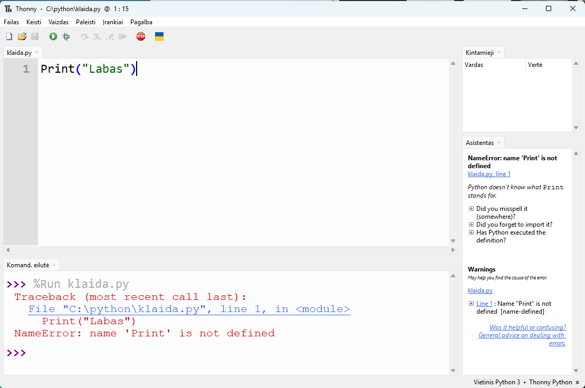
line 1) ir paskutinės eilutės (NameError: name 'Print' is not defined).Kaip skaityti klaidos pranešimą:
- Rask eilutės numerį, pavyzdžiui,
line 1. - Perskaityk paskutinę pranešimo eilutę – joje klaidos pavadinimas ir paaiškinimas.
- Atidžiai peržiūrėk nurodytą eilutę. Jei joje klaidos nerandi, patikrink eilutę virš jos.
- Pataisyk ir paleisk programą iš naujo.
Kitas pavyzdys: pamiršta uždaryti kabutes.
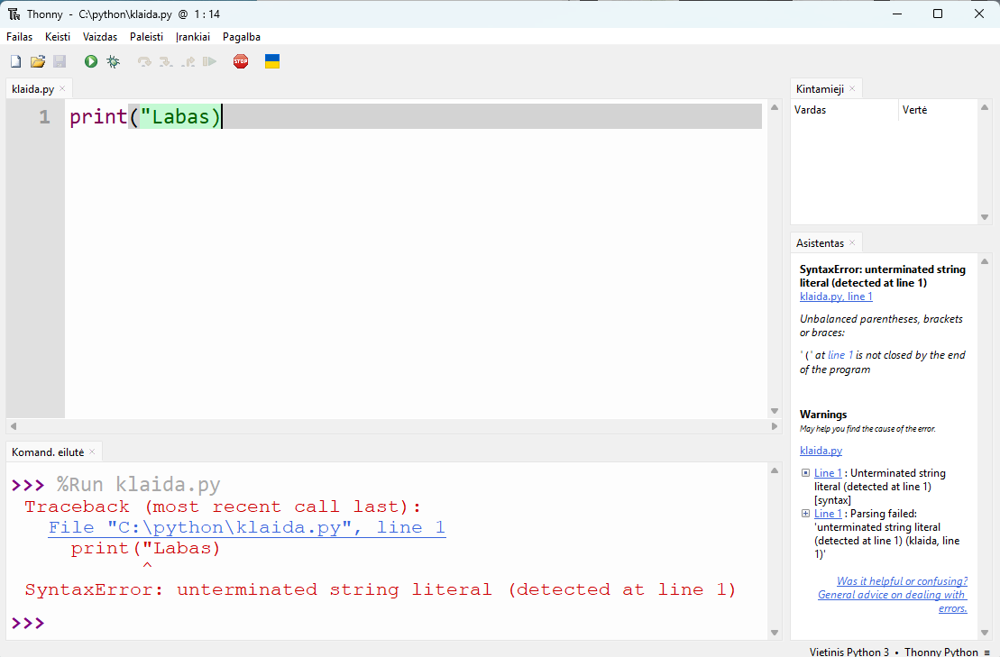
^ rodo vietą, kurioje Python pastebėjo klaidą. Dešinėje atsidaręs langelis klaidą paaiškina plačiau, bet angliškai.Dažniausios pirmųjų pamokų klaidos:
| Klaidingas kodas | Python pranešimas | Kas negerai | Kaip taisyti |
|---|---|---|---|
Print("Labas") | NameError: name 'Print' is not defined | Komanda parašyta didžiąja raide | print("Labas") |
print("Labas) | SyntaxError: unterminated string literal | Neuždarytos kabutės | print("Labas") |
print("Labas" | SyntaxError: '(' was never closed | Neuždarytas skliaustas | print("Labas") |
print("Plotas:" plotas) | SyntaxError: invalid syntax | Trūksta kablelio tarp teksto ir kintamojo | print("Plotas:", plotas) |
print(plotas), kai kintamasis plotas dar nesukurtas | NameError: name 'plotas' is not defined | Kintamasis naudojamas anksčiau, nei jam priskirta reikšmė, arba jo vardas parašytas su klaida | Pirma priskirk reikšmę, patikrink vardo rašybą |
Du klaidų pavadinimai, kuriuos verta įsiminti:
SyntaxError– rašybos klaida: trūksta skliausto, kabučių, kablelio.NameError– Python nežino tokio vardo: suklydai rašydamas komandą ar kintamąjį.
Būna ir klaidų, apie kurias Python nepraneša: programa veikia, bet atsakymas neteisingas. Pavyzdžiui, perimetrui skaičiuoti parašei ilgis * plotis. Todėl rezultatą visada patikrink pats – su skaičiais, kurių atsakymą žinai.
Savo programoje labas.py tyčia padaryk klaidą: ištrink vieną kabutę ir paleisk. Perskaityk pranešimą, rask jame eilutės numerį, tada klaidą pataisyk.
7. Praktinės užduotys
Kiekvieną užduotį atlik atskirame faile ir įrašyk aplanke python. A lygio užduotys privalomos visiems. B ir C lygio užduotis rinkis, jei A lygis pavyko.
Kiekvienos programos pirmoje eilutėje komentaru parašyk savo vardą ir ką programa daro.
A lygis: pagrindai
A1 užduotis. Vizitinė · vizitine.py
Parašyk programą, kuri išveda tris eilutes: tavo vardą, klasę ir pomėgį. Pavyzdys:
Vardas: Rasa
Klasė: 9a
Pomėgis: krepšinisA2 užduotis. Minutės · minutes.py
Apskaičiuok, kiek minučių yra vienoje savaitėje. Skaičiuoti turi Python, o ne tu. Rezultatą išvesk su paaiškinimu:
Savaitėje yra 10080 minučiųA3 užduotis. Stačiakampis · staciakampis.py
Sukurk kintamuosius ilgis ir plotis, priskirk jiems reikšmes 8 ir 5. Apskaičiuok perimetrą ir plotą, rezultatus įsimink kintamuosiuose perimetras ir plotas ir išvesk:
Perimetras: 26
Plotas: 40Pakeisk ilgį į 12, plotį į 7 ir paleisk dar kartą. Turi gauti 38 ir 84, nekeisdamas jokių kitų eilučių.
B lygis: įtvirtinimas
B4 užduotis. Klaidų medžioklė · klaidos.py
Šioje programoje yra 4 klaidos. Surink ją tiksliai tokią, paleisk ir taisyk po vieną klaidą, kol programa išves Plotas: 40.
Print("Stačiakampio skaičiavimai)
ilgis = 8
plotis = 5
plotas = ilgis x plotis
print("Plotas:" plotas)Rodyti atsakymą
Klaidos: Print didžiąja raide; pirmoje eilutėje neuždarytos kabutės; daugyba pažymėta x vietoj *; paskutinėje eilutėje trūksta kablelio.
B5 užduotis. Spėk rezultatą · spejimas.py
Nepaleidęs programos, ant popieriaus užsirašyk, ką ji išves. Tada surink, paleisk ir palygink.
a = 4
b = a + 6
a = b * 2
print(a, b)Rodyti atsakymą
Programa išveda 20 10. Pirma a yra 4, b tampa 10, tada a pakeičiamas į 20.
B6 užduotis. Saldainiai · saldainiai.py
47 saldainius po lygiai dalijasi 6 draugai. Sukurk kintamuosius saldainiai ir draugai. Apskaičiuok, po kiek saldainių gaus kiekvienas ir kiek liks. Naudok veiksmus // ir %.
Kiekvienas gaus: 7
Liks: 5C lygis: iššūkis
C7 užduotis. Sukeitimas · sukeitimas.py
Programos pradžioje a = 3, b = 9. Sukeisk kintamųjų reikšmes vietomis taip, kad programa išvestų 9 3. Eilutės a = 9 rašyti negalima: programa turi veikti su bet kokiomis pradinėmis reikšmėmis.
Rodyti patarimą
Prireiks trečio kintamojo, kuriame laikinai įsiminsi vieną reikšmę.
Rodyti atsakymą
a = 3
b = 9
laikinas = a
a = b
b = laikinas
print(a, b)C8 užduotis. Temperatūra · temperatura.py
Temperatūra Celsijaus laipsniais verčiama į Farenheito laipsnius pagal formulę F = C · 9 / 5 + 32. Kintamajam c priskirk 25, apskaičiuok ir išvesk temperatūrą Farenheito laipsniais. Turi gauti 77.0.
C9 užduotis. Laikas · laikas.py
Filmas trunka 200 minučių. Parašyk programą, kuri išveda trukmę valandomis ir minutėmis:
Filmas trunka 3 val. 20 min.Pakeitus minučių skaičių į 135, programa turi išvesti 2 val. 15 min.
Rodyti patarimą
Valandos yra minutes // 60, o likusios minutės – minutes % 60.
8. Pasitikrink
Atsakyk į klausimus nepaleisdamas Thonny. Atsakymą užsirašyk ir tik tada atverk teisingą.
1. Ką išves print("3 + 4")?
3 + 4 – kabutėse esantis tekstas išvedamas toks, koks parašytas.
2. Ką išves print(3 + 4 * 2)?
11 – pirma atliekama daugyba, tada sudėtis.
3. Kam lygu 17 // 5 ir 17 % 5?
3 ir 2 – penketas į 17 telpa 3 kartus, lieka 2.
4. Ką išves print(10 / 2)?
5.0 – dalybos / rezultatas visada su tašku.
5. Kurie vardai tinkami: 2klase, klase_2, mano klase, Klase?
klase_2 ir Klase. Vardas 2klase prasideda skaitmeniu, o mano klase turi tarpą.
6. Kokia klaida eilutėje print("Suma:" 5 + 3)?
Trūksta kablelio po teksto. Teisingai: print("Suma:", 5 + 3).
7. Ką išves programa: x = 3, x = x * x, x = x + 1, print(x)?
10 – iš pradžių 3, tada 3 · 3 = 9, tada 9 + 1 = 10.
8. Kuo skiriasi Thonny redaktorius nuo komandų eilutės?
Redaktoriuje rašoma visa programa, kuri įrašoma į failą ir paleidžiama klavišu F5. Komandų eilutėje matomas rezultatas ir galima išbandyti vieną komandą iš karto.
Jei teisingai atsakei į 6 ar daugiau klausimų, pamokos medžiagą supratai. Jei mažiau – grįžk prie skyriaus, kuriame suklydai, ir pakartok jo pavyzdžius.
9. Atsiskaitymas
Atsiskaitymui atsiųsk tris A lygio programas: vizitine.py, minutes.py ir staciakampis.py. Jei atlikai B ar C lygio užduočių, pridėk ir jas.
- Kiekvieną programą paleisk dar kartą ir įsitikink, kad ji veikia be klaidų.
- Patikrink, ar kiekvienos programos pirmoje eilutėje yra komentaras su tavo vardu.
- Failus prisek prie laiško ir išsiųsk adresu vidas.darbai@gmail.com.
- Laiško temoje parašyk klasę, vardą, pavardę ir „Python 1 pamoka“.
Įsivertink
Pamoką įveikei, jei gali pasakyti:
- moku sukurti, įrašyti ir paleisti programą Thonny aplinkoje;
- žinau, kada
print()skliaustuose reikia kabučių, o kada ne; - moku užrašyti aritmetinius veiksmus, žinau, ką daro
//ir%; - moku sukurti kintamąjį ir panaudoti jį skaičiavimuose;
- gavęs klaidos pranešimą, randu eilutės numerį ir klaidos pavadinimą.
Svarbiausia iš šios pamokos
| Kas | Kaip rašoma | Pavyzdys |
|---|---|---|
| Teksto išvedimas | print("tekstas") | print("Labas") |
| Skaičiavimo išvedimas | print(reiškinys) | print(7 * 2) |
| Keli dalykai vienoje eilutėje | print(a, b) | print("Plotas:", plotas) |
| Priskyrimas | vardas = reikšmė | ilgis = 8 |
| Komentaras | # tekstas | # skaičiuoju plotą |
| Paleidimas | F5 arba meniu |
Kitoje pamokoje
Šios pamokos programos visada skaičiuoja su tais pačiais skaičiais, kuriuos įrašei į kodą. Kitoje pamokoje išmoksi komandą input(): programa paklaus duomenų vartotojo, kaip blokinės schemos įvedimo blokas.